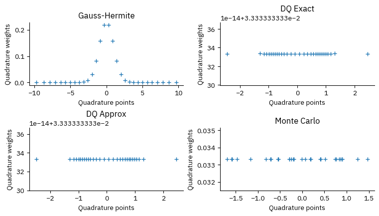
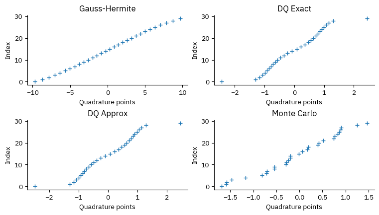
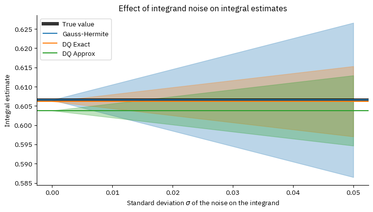

Designed Quadrature (DQ)¶
(This feature will become available with STACIE 1.3.0, which is not yet released at the time of writing.)
This notebook illustrates how to use the module stacie.dq to compute
integrals over noisy integrands.
While solving this problem is not the main goal of STACIE,
it is often a useful step when post-processing transport properties
computed with STACIE at different densities and/or total energies.
In general, designed quadrature (DQ) refers to the numerical optimization of quadrature rules with application-specific constraints. This means that the grid points and weights in the following quadrature rule are optimized to work well for specific use cases:
where \(p(x)\) is some weight function, in our case always a normalized probability density function.
In STACIE, the constraints are a consequence of the fact that the integrand is the result of statistical sampling in a stochastic simulation. We will initially assume that evaluation of the integrand at each grid point has the same variance due to finite sampling, in which case the quadrature weights at each point are ideally all equal, \(w_n = 1/N\). (This minimizes the variance of the numerical integral.) More generally, we can average over an integer number of function evaluations at each point, for which the weights should be proportional to the number of evaluations, as this will minimize the variance of the numerical integral:
In either case, the weights of the quadrature rule are positive and fixed upfront, while we have the freedom to tune the positions of the grid points.
STACIE’s DQ algorithm optimizes the quadrature points such that the rule is exact for polynomials \(f(x)\) up to some degree \(k\). The optimization is performed with a modified Levenberg-Marquardt algorithm and includes a logarithmic barrier to spread points evenly across the support of \(p(x)\). Care is taken to avoid any interference of the logarithmic barrier with the polynomial exactness constraints. The regularization is orthogonal to these constraints by construction. To validate the accuracy of the quadrature rule for the optimal points, the weights are refitted in a final step of the algorithm. The refitted weights should be proportional to the given weights (or equal if none were given). If not, the optimization of the grid points has failed and should not be trusted. (Such failures normally result in an error during the optimization.)
Rules with equal weights are known as Chebyshev-type quadrature rules, [GP16] not to be confused with the more specific Chebyshev-Gauss quadrature. The main limitation of Chebyshev-type quadrature is that the quadrature rules can only be exact for polynomials up to a relatively low degree \(k\), typically 6, 8 or 10, depending on the choice of \(p(x)\) and the number of points. [Ber37]. For well-behaved “double scaling” probability densities \(p(x)\), the required number of points scales like \(\mathcal{O}(k^2)\). [GP16] For some \(p(x)\) it may even be impossible to reach high degrees. That being said, for the case of noisy integrands, modest degrees typically suffice: even if the integrand has a small amount of noise, STACIE’s DQ grids will easily outperform standard Gaussian quadrature rules with the same number of points.
Test Case With a Noisy Integrand¶
This notebook demonstrates the DQ method with a computationally cheap but noisy integrand. In practice, the integrand is typically (very) expensive to evaluate, and the noise arises from the sampling required to estimate the integrand at each point.
We will use a noisy cosine function as example integrand, and the standard normal distribution as probability density function:
The noise \(\epsilon\) is drawn from a normal distribution with mean zero and standard deviation \(\sigma\), and the calculations below use different values of \(\sigma\) to illustrate the effect of noise.
The true value of the integral (without noise) is \(1/\sqrt{e}\).
Comparison of Quadrature Methods¶
We will compare four quadrature methods:
Gauss-Hermite Quadrature: The standard Gauss-Hermite quadrature points and weights are optimal for integrating polynomials times a normal distribution. It is exact for polynomials of degree up to \(2N-1\) when using \(N\) points. However, it does not account for noise in the integrand.
DQ with exact moments: We use the first 7 moments (0 to 6) of the standard normal distribution to compute the quadrature points. This method will give exact results for polynomials of degree up to 6, and is expected to be more robust against noise that the Gauss-Hermite rule.
DQ with approximate moments: We use again the first 7 moments (0 to 6) of the standard normal distribution to compute the quadrature points. Instead of using the exact moments, we estimate them from 10000 samples drawn from the standard normal distribution. This mimics the situation where the moments are estimated from a finite number of samples.
Monte Carlo: We draw grid points from the standard normal distribution and use them to compute the integral using the standard Monte Carlo method. This could be considered as a quadrature method with random points and equal weights.
In all cases, we will use 30 quadrature points to compute the integral. The uncertainty propagation of \(\epsilon\) can be performed analytically:
where \(w_i\) are the quadrature weights.
Implementation¶
import matplotlib.pyplot as plt
import numpy as np
import scipy as sp
from stacie.dq import construct_dq_empirical, construct_dq_stdnormal, dq3, Symmetry
# Probabilists Gauss-Hermite quadrature,
# with weights rescaled to integrate with respect
# to the standard normal distribution.
npoint = 30
x_gh, w_gh = np.polynomial.hermite_e.hermegauss(npoint)
w_gh /= np.sqrt(2 * np.pi)
# DQ with exact moments
nmoment = 6
# Symmetry.NONZERO is used to exclude x=0 from the grid
# as to obtain an even number of points.
x_dq_exact, w_dq_exact = construct_dq_stdnormal(
np.linspace(0.1, 1.0, npoint // 2), nmoment, Symmetry.NONZERO, verbose=True
)
iter RMSD error Step size Ridge Cond.Num.
---- ----------- ----------- ----------- -----------
0 1.47e-01 4.23e-01 6.86e-01 8.52e+02
1 1.19e-01 3.00e-01 9.99e-01 1.03e+03
2 8.91e-02 2.47e-01 1.08e+00 4.47e+02
3 8.02e-02 3.00e-01 5.33e-01 2.42e+02
4 3.62e-02 1.92e-01 3.06e-01 2.48e+02
5 3.34e-02 7.45e-02 5.47e-01 3.06e+02
6 3.15e-02 7.82e-02 5.55e-01 3.11e+02
7 2.92e-02 7.66e-02 5.81e-01 3.06e+02
8 2.67e-02 2.32e-01 3.09e-01 2.96e+02
9 2.36e-02 4.90e-01 0.00e+00 2.56e+02
10 1.24e-03 1.69e-01 0.00e+00 2.42e+02
11 2.48e-04 3.37e-02 0.00e+00 2.55e+02
12 2.48e-07 1.02e-03 0.00e+00 2.54e+02
13 5.43e-12 3.46e-06 0.00e+00 2.55e+02
14 1.67e-16 7.99e-11 0.00e+00 2.55e+02
# DQ with approximate moments
rng = np.random.default_rng(seed=42)
std_points = rng.standard_normal(size=10000)
x_dq_approx, w_dq_approx = construct_dq_empirical(
std_points, npoint, nmoment, verbose=True
)
iter RMSD error Step size Ridge Cond.Num.
---- ----------- ----------- ----------- -----------
0 7.97e-02 4.49e-01 2.70e-01 4.83e+02
1 5.07e-02 1.01e+00 0.00e+00 4.08e+02
2 5.92e-03 2.51e-01 0.00e+00 2.96e+02
3 2.81e-03 1.33e-01 0.00e+00 3.04e+02
4 3.03e-04 5.43e-02 0.00e+00 3.32e+02
5 2.02e-05 9.35e-03 0.00e+00 3.38e+02
6 7.30e-08 5.47e-04 0.00e+00 3.38e+02
7 7.41e-13 1.73e-06 0.00e+00 3.38e+02
8 3.29e-16 1.74e-11 0.00e+00 3.38e+02
# Simple Monte Carlo method
x_mc = rng.standard_normal(size=npoint)
x_mc.sort()
w_equal = np.full_like(x_gh, 1 / len(x_gh))
CASES = [
("Gauss-Hermite", x_gh, w_gh),
("DQ Exact", x_dq_exact, w_dq_exact),
("DQ Approx", x_dq_approx, w_dq_approx),
("Monte Carlo", x_mc, w_equal),
]
def plot_points_weights():
plt.close("quad")
_, axs = plt.subplots(2, 2, num="quad")
for ax, (title, x, w) in zip(axs.flat, CASES, strict=True):
ax.set_title(title)
ax.set_xlabel("Quadrature points")
ax.set_ylabel("Quadrature weights")
ax.plot(x, w, "+")
plot_points_weights()

def plot_points():
plt.close("points")
_, axs = plt.subplots(2, 2, num="points")
idx = np.arange(len(x_gh))
for ax, (title, x, _w) in zip(axs.flat, CASES, strict=True):
ax.plot(x, idx, "+")
ax.set_xlabel("Quadrature points")
ax.set_ylabel("Index")
ax.set_title(title)
plot_points()

# Numerical integration
integral_true = 1 / np.sqrt(np.e)
integral_gh = np.dot(w_gh, np.cos(x_gh))
integral_dq_exact = np.cos(x_dq_exact).mean()
integral_dq_approx = np.cos(x_dq_approx).mean()
integral_mc = np.cos(x_mc).mean()
print(f"True value: {integral_true:.15f}")
print(f"Gauss-Hermite 30: {integral_gh:.15f}")
print(f"DQ Exact 30: {integral_dq_exact:.15f}")
print(f"DQ Approx 30: {integral_dq_approx:.15f}")
print(f"Monte Carlo 30: {integral_mc:.15f}")
True value: 0.606530659712633
Gauss-Hermite 30: 0.606530659712634
DQ Exact 30: 0.606168725991488
DQ Approx 30: 0.603781473272782
Monte Carlo 30: 0.673965607356054
Note that the deviations between the first two quadrature methods and the true value are not due to noise, but rather due to the fact that the quadrature rules are approximate for a non-polynomial integrand.
The approximate DQ method and Monte Carlo are affected by sampling noise:
In case of the approximate DQ method, the moments are estimated from a finite number of samples, which introduces noise in the quadrature points.
In case of Monte Carlo, the quadrature points are drawn randomly, which also introduces noise in the integral estimate.
def plot_sigma():
sigmas = np.linspace(0, 0.05, 10)
plt.close("sigma")
fig, ax = plt.subplots(num="sigma")
ax.axhline(integral_true, color="k", lw=5, alpha=0.8, label="True value")
# Gauss-Hermite
ax.axhline(integral_gh, color="C0", label="Gauss-Hermite")
factor_gh = np.sqrt((w_gh**2).sum())
ax.fill_between(
sigmas,
integral_gh - factor_gh * sigmas,
integral_gh + factor_gh * sigmas,
color="C0",
alpha=0.3,
)
# DQ Exact
ax.axhline(integral_dq_exact, color="C1", label="DQ Exact")
factor_dq_exact = np.sqrt((w_equal**2).sum())
ax.fill_between(
sigmas,
integral_dq_exact - factor_dq_exact * sigmas,
integral_dq_exact + factor_dq_exact * sigmas,
color="C1",
alpha=0.3,
)
# DQ Approx
ax.axhline(integral_dq_approx, color="C2", label="DQ Approx")
factor_dq_approx = np.sqrt((w_equal**2).sum())
ax.fill_between(
sigmas,
integral_dq_approx - factor_dq_approx * sigmas,
integral_dq_approx + factor_dq_approx * sigmas,
color="C2",
alpha=0.3,
)
# Plot details
ax.set_xlabel(r"Standard deviation $\sigma$ of the noise on the integrand")
ax.set_ylabel("Integral estimate")
ax.legend()
ax.set_title("Effect of integrand noise on integral estimates")
plot_sigma()

The bands in the plot represent the uncertainty on the integral estimates due to the noise on the integrand.
The plot shows that even for errors on the integrand on the order of a percentage, it is beneficial to use the DQ method instead of standard quadrature rules, as it significantly reduces the uncertainty on the integral estimate. (The advantage is about a factor of 2 in this example, simply because about 75% of the Gauss-Hermite points have almost zero weights.)
Compared to Monte Carlo, the DQ method is less biased. (Monte Carlo is mainly beneficial for high-dimensional integrals, which is not the case here.)
Designed Quadrature with Unequal Weights¶
As mentioned above, it is also possible dial in a specific choice of quadrature weights, up to a normalization factor, during the optimization of the quadrature points. This can be useful to obtain simpler grids with the same polynomial exactness. The code below illustrates how this can be accomplished.
We’ll use Gauss-Hermite points and weights as a source of inspiration:
x_gh6, w_gh6 = np.polynomial.hermite_e.hermegauss(6)
w_gh6 /= np.sqrt(2 * np.pi)
print("x:", " ".join(f"{x:8.5f}" for x in x_gh6))
print("w:", " ".join(f"{w:8.5f}" for w in w_gh6))
x: -3.32426 -1.88918 -0.61671 0.61671 1.88918 3.32426
w: 0.00256 0.08862 0.40883 0.40883 0.08862 0.00256
This inspires us to use weights [1, 2, 12, 12, 2, 1] (up to a normalization factor)
in the DQ optimization.
These weights correspond to 30 function evaluations in total,
1 for the two outer points, 2 for the two next points, and 12 for the two middle points.
An integral can then be approximated by just averaging over the 30 function evaluations at the 6 quadrature points.
x_dq6, w_dq6 = construct_dq_stdnormal(
np.linspace(0.1, 1.0, 3), 6, Symmetry.NONZERO, weights0=[12, 2, 1], verbose=True
)
print()
print("x:", " ".join(f"{x:8.5f}" for x in x_dq6))
print("w:", " ".join(f"{w:8.5f}" for w in w_dq6))
iter RMSD error Step size Ridge Cond.Num.
---- ----------- ----------- ----------- -----------
0 2.31e+00 1.40e+00 4.85e-01 4.92e+03
1 1.11e+00 1.16e+00 0.00e+00 2.63e+02
2 9.34e-01 3.30e-01 1.14e-01 2.54e+03
3 8.30e-01 7.77e-01 7.22e-02 5.00e+02
4 9.55e-02 1.74e-01 0.00e+00 4.76e+01
5 2.10e-03 2.71e-02 0.00e+00 5.12e+01
6 1.19e-06 6.46e-04 0.00e+00 5.19e+01
7 4.20e-13 3.81e-07 0.00e+00 5.19e+01
8 1.20e-15 1.37e-13 0.00e+00 5.19e+01
x: -2.43725 -1.38990 -0.65804 0.65804 1.38990 2.43725
w: 0.03333 0.06667 0.40000 0.40000 0.06667 0.03333
Let’s now try this grid for the same integral as before:
integral_gh6 = np.dot(w_gh6, np.cos(x_gh6))
integral_dq6 = np.dot(w_dq6, np.cos(x_dq6))
print(f"True value: {integral_true:.15f}")
print(f"Gauss-Hermite 30: {integral_gh:.15f}")
print(f"Gauss-Hermite 6: {integral_gh6:.15f}")
print(f"DQ Exact 30: {integral_dq_exact:.15f}")
print(f"DQ Exact 6: {integral_dq6:.15f}")
True value: 0.606530659712633
Gauss-Hermite 30: 0.606530659712634
Gauss-Hermite 6: 0.606529472609343
DQ Exact 30: 0.606168725991488
DQ Exact 6: 0.606141193064441
As expected, the two DQ grids perform similarly: there is only a small difference for the same number of function evaluations. Assigning uneven weights can have a few minor practical advantages:
The quadrature points are easier to solve numerically and will be better conditioned. (This is mainly relevant for a larger number of points and/or higher polynomial degrees.)
There are fewer unique points, which may simplify the bookkeeping of function evaluations.
If one can control the sampling error of the integrand (through the simulation length), one has more freedom to use uneven weights. In this case, the optimal weights are inverse proportional to the variance of the integrand at each point. (This may sound appealing, but most stochastic simulations have a burn-in period, which makes it difficult to control the sampling error precisely.)
3-Point Grid¶
The module stacie.dq also includes a simple function stacie.dq.dq3()
to construct a 3-point quadrature grid with equal weights.
The grid will integrate exactly any degree-3 polynomial times a distribution
with given mean, standard deviation and skewness.
Note that real solutions for the points only exist for skewness values in the range
\(\left[-\frac{1}{\sqrt{2}}, \frac{1}{\sqrt{2}}\right]\).
A simple example:
x_dq3 = dq3(mean=0.5, std=2.0, skew=0.7)
print("x:", " ".join(f"{x:8.5f}" for x in x_dq3))
print(f"mean: {x_dq3.mean():.5f}")
print(f"std: {x_dq3.std():.5f}")
print(f"skewness: {sp.stats.skew(x_dq3):.5f}")
x: -1.02845 -0.79682 3.32526
mean: 0.50000
std: 2.00000
skewness: 0.70000
This is a minimalistic approach with little extra effort over just computing a single quadrature point at the mean of the distribution. Yet, it will give a much better estimate of the integral for a noisy integrand.
This 3-point grid, and the DQ grids above, can be used to propagate errors through nonlinear functions. Given estimates of the mean, standard deviation and skewness of a stochastic quantity, one can use the grid to estimate the statistics of a nonlinear function of that quantity.
For example, let’s estimate the sine of a random variable with mean 1.0, standard deviation 0.5 and skewness 0.0:
x_dq3 = dq3(mean=1.0, std=0.5, skew=0.0)
sine_mean_dq3 = np.sin(x_dq3).mean()
sine_std_dq3 = np.sin(x_dq3).std()
print(f"DQ3 sine: {sine_mean_dq3:.5f} ± {sine_std_dq3:.5f}")
DQ3 sine: 0.73953 ± 0.26363
If the underlying distribution is normal, the true value of the sine mean and standard deviation can be computed numerically:
def integrand1(x):
return np.sin(x) * sp.stats.norm.pdf(x, loc=1.0, scale=0.5)
def integrand2(x):
return (np.sin(x) - sine_mean_norm) ** 2 * sp.stats.norm.pdf(x, loc=1.0, scale=0.5)
sine_mean_norm = sp.integrate.quad(integrand1, -np.inf, np.inf)[0]
sine_std_norm = np.sqrt(sp.integrate.quad(integrand2, -np.inf, np.inf)[0])
print(f"Normal sine: {sine_mean_norm:.5f} ± {sine_std_norm:.5f}")
Normal sine: 0.74260 ± 0.27341
The 3-point error propagation is generally more accurate than the typical first-order approximation, and has the added benefit that it does not require the function to be differentiable. There is also no need to implement analytical or numerical derivatives.
For example, let’s compute the first-order approximation of the mean of the sine function and its uncertainty:
sine_mean_1st = np.sin(1.0)
sine_std_1st = np.cos(1.0) * 0.5
print(f"First-order sine: {sine_mean_1st:.5f} ± {sine_std_1st:.5f}")
First-order sine: 0.84147 ± 0.27015
Note that the uncertainty is fine but that the mean of the first-order approximation is quite off, as the sine function is not linear around 1.0.
This few-point approach to error propagation is also known as the Unscented Transform.
Regression Tests¶
If you are experimenting with this notebook, you can ignore any exceptions below. The tests are only meant to pass for the notebook in its original form.
if abs(integral_dq_exact - 0.606168725991488) > 0.00001:
raise ValueError(f"wrong integral (DQ 30 exact): {integral_dq_exact:.3e}")
if abs(integral_dq6 - 0.606141193064441) > 0.00001:
raise ValueError(f"wrong integral (DQ 6): {integral_dq6:.3e}")
if abs(sine_mean_dq3 - 0.73953) > 0.001:
raise ValueError(f"wrong sine mean (DQ3): {sine_mean_dq3:.3e}")
if abs(sine_std_dq3 - 0.26363) > 0.001:
raise ValueError(f"wrong sine std (DQ3): {sine_std_dq3:.3e}")